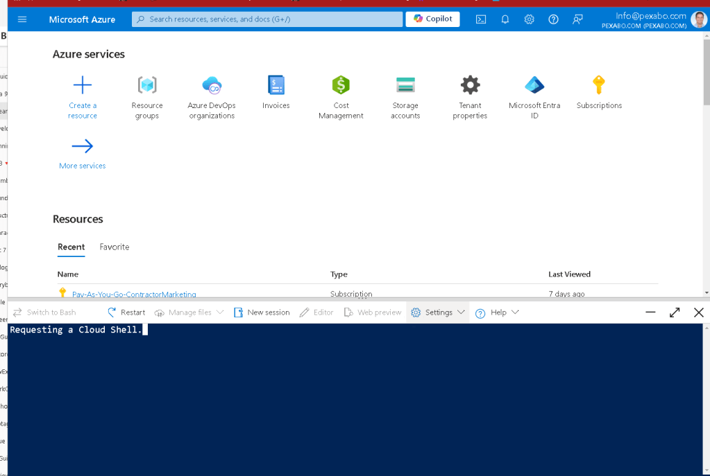
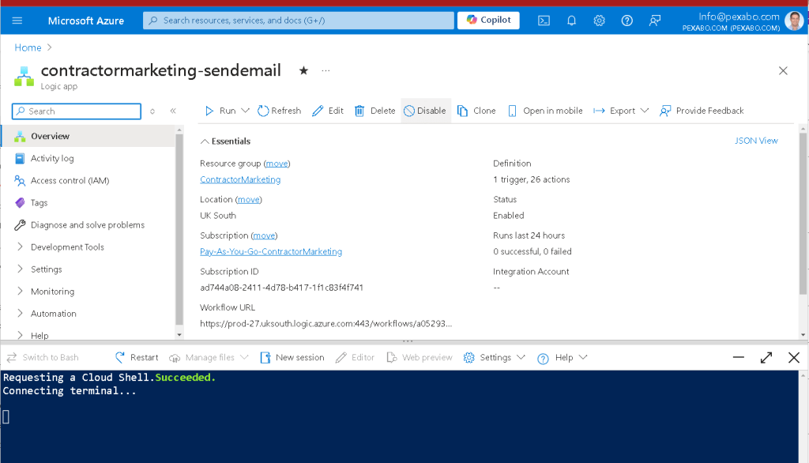
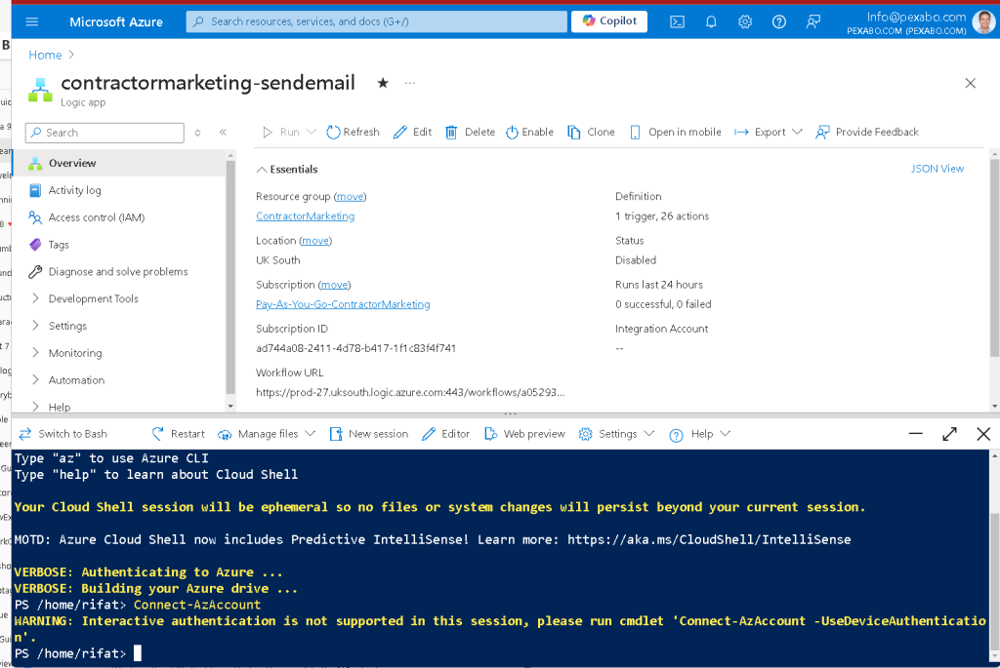
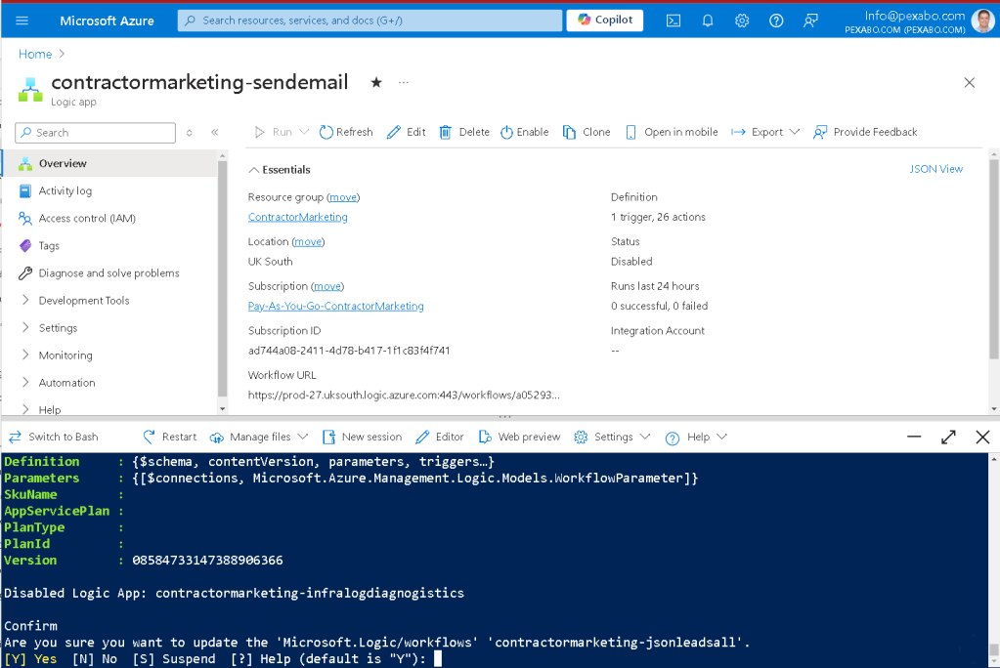
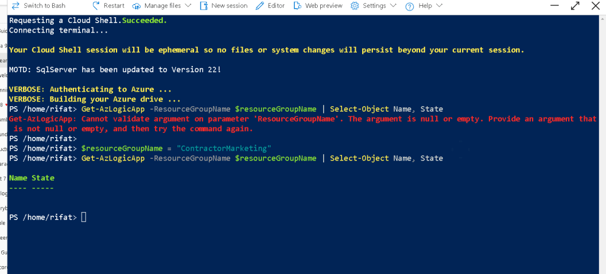
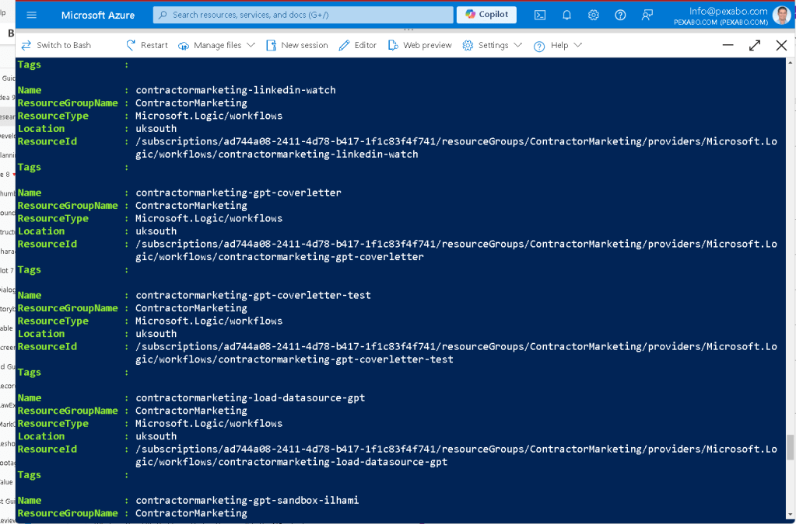
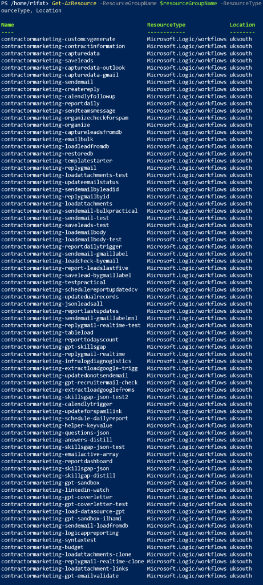
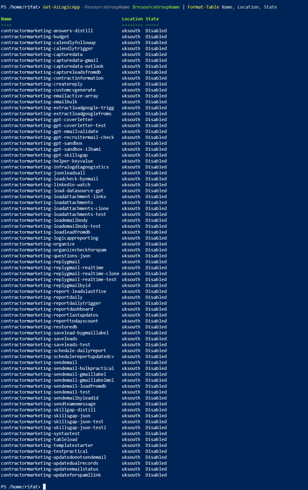

🚀 How to Turn Off All Logic Apps in a Resource Group in Azure 🌐
Managing Logic Apps in Azure can be a breeze when you know the steps! 💡 If you need to turn off all the Logic Apps within a specific resource group, this guide will walk you through the process step by step. Let’s get started! 🔥
🎯 Step 1: Access the Azure Portal
-
Log in to the Azure Portal at https://portal.azure.com.
-
In the search bar at the top, type "Resource Groups" and select the Resource Groups blade from the drop-down. 🖥️

🚀 This will show all your available resource groups in your Azure subscription.
🎯 Step 2: Select the Target Resource Group
- Scroll through the list or use the search bar to find the resource group containing the Logic Apps you want to turn off. Click on the resource group name to open it.
🎯 Step 3: List Logic Apps in the Resource Group
-
Inside the resource group, click "Logic Apps" from the menu or search for "Logic Apps" in the search box within the resource group page.
-
You’ll see a list of all the Logic Apps within that resource group. 🌐
🎯 Step 4: Turn Off Logic Apps
-
Manually Turn Off Each Logic App:
-
Click on a Logic App name to open it.
-
Navigate to the Overview section.
-
Click the Disable button to turn off the Logic App. 🔒 Repeat this for each Logic App in the resource group. ⏳

💡 Tip: Use the Disable option to ensure no new triggers are fired in the Logic App.
🎯 Step 5: Automate the Process with Azure PowerShell (Optional)
If you have many Logic Apps, manually disabling them might be tedious. Here’s a quick PowerShell script to automate the process:
Login to Azure
Connect-AzAccount
Define your resource group
$resourceGroupName = "ContractorMarketing"
List all Logic A$logicApps = Get-AzLogicApp -ResourceGroupName pps in the resource group and disable them
$logicApps = Get-AzLogicApp -ResourceGroupName $resourceGroupName
foreach ($logicApp in $logicApps) {
Stop-AzLogicApp -ResourceGroupName $resourceGroupName -Name $logicApp.Name
Write-Output "Disabled Logic App: $($logicApp.Name)"
}
💡 This script disables all the Logic Apps in your resource group in one go! 🚀
One Liner
$logicApps | ForEach-Object { Stop-AzLogicApp -ResourceGroupName $resourceGroupName -Name $_.Name; Write-Output "Disabled Logic App: $($_.Name)" }

🎯 Step 6: Verify Everything is Turned Off
Once you've completed the steps, head back to the Logic Apps list in the resource group and ensure all the Logic Apps are disabled. ✅
🎉 That's It! You've successfully turned off all Logic Apps in a resource group in Azure. Whether you're doing it manually or using PowerShell, this process ensures that all Logic Apps are safely disabled, avoiding unexpected triggers or actions.
🔗 Connect with me:
-
💼 LinkedIn: https://www.linkedin.com/in/rifaterdemsahin/
-
🐦 Twitter: https://x.com/rifaterdemsahin
-
🎥 YouTube: https://www.youtube.com/@RifatErdemSahin
-
💻 GitHub: https://github.com/rifaterdemsahin
Do you have any questions about Azure Logic Apps? Drop them below, and let's talk! 😊
You can convert your PowerShell script into a one-liner by using semicolons to separate the commands. Here’s the one-liner version:
$logicApps | ForEach-Object { Stop-AzLogicApp -ResourceGroupName $resourceGroupName -Name $.Name; Write-Output "Disabled Logic App: $($.Name)" }
Explanation:
-
$logicApps | ForEach-Object: Loops through each Logic App in$logicApps. -
Stop-AzLogicApp: Stops each Logic App using its name and the specified resource group. -
Write-Output: Outputs a message confirming that the Logic App has been disabled.
This version will achieve the same result in a more compact, one-liner format.
It seems like the Stop-AzLogicApp cmdlet isn't recognized, which indicates either the Azure PowerShell module isn't installed or there’s a typo in the cmdlet name. Unfortunately, there is no Stop-AzLogicApp cmdlet in the Azure PowerShell module.
To disable a Logic App in Azure PowerShell, use the Set-AzLogicApp cmdlet instead. Here's the correct version of the script, which uses the Set-AzLogicApp cmdlet to disable the Logic Apps:
Corrected One-Liner:
$logicApps | ForEach-Object { Set-AzLogicApp -ResourceGroupName $resourceGroupName -Name $.Name -State Disabled; Write-Output "Disabled Logic App: $($.Name)" }
Explanation:
-
Set-AzLogicApp -State Disabled: This cmdlet changes the state of the Logic App to "Disabled", effectively stopping it. -
The rest of the logic remains the same, looping over the logic apps and outputting a confirmation for each one.
Before running this, ensure the Az.LogicApp module is installed by using the following command:
Install-Module -Name Az.LogicApp -AllowClobber -Force
Once installed, you should be able to disable Logic Apps using the Set-AzLogicApp cmdlet.

To list all Logic Apps in your Azure subscription along with their current running states, you can use the Get-AzLogicApp cmdlet. Here’s a one-liner that retrieves the Logic Apps and outputs their names and statuses:
Get-AzLogicApp -ResourceGroupName $resourceGroupName | Select-Object Name, State
Explanation:
-
Get-AzLogicApp -ResourceGroupName $resourceGroupName: Retrieves all Logic Apps within the specified resource group. -
Select-Object Name, State: Selects and displays only theNameandStateproperties for each Logic App. TheStatewill show whether the Logic App is "Enabled" or "Disabled."
If you want to list all Logic Apps across all resource groups in your subscription, you can do this:
Get-AzLogicApp | Select-Object ResourceGroupName, Name, State
This command will output the resource group, name, and state of each Logic App in your entire subscription.
Make sure the Az.LogicApp module is installed as well before running these commands. You can install it using:
Install-Module -Name Az.LogicApp -AllowClobber -Force

If you're seeing an empty output when running the Get-AzLogicApp command, it might be due to one of the following reasons:
1. Empty Resource Group or No Logic Apps
- The specified resource group (
ContractorMarketing) might not contain any Logic Apps. You can verify if the resource group exists and contains Logic Apps by running:Get-AzResource -ResourceGroupName $resourceGroupName -ResourceType Microsoft.Logic/workflowsThis will show all resources of type Logic Apps (Microsoft.Logic/workflows) in the resource group.
2. Logic Apps in Other Resource Groups
- If there are no Logic Apps in the
ContractorMarketingresource group, there might be Logic Apps in other resource groups. To list all Logic Apps across all resource groups in your subscription, use this:Get-AzLogicApp | Select-Object ResourceGroupName, Name, StateThis will show the name and state of Logic Apps across the entire subscription, including those that are disabled.
3. Permission Issues
- Ensure that your account has sufficient permissions to view Logic Apps in the specified resource group. You need at least the Logic App Contributor or Reader role assigned to your account for that resource group. You can check your permissions using the following command:
Get-AzRoleAssignment -ResourceGroupName $resourceGroupName -SignInName "your-email@example.com"
4. Filtering Logic Apps
- It's possible that the
Get-AzLogicAppcommand is not returning any results because there are no Logic Apps in the "Enabled" state by default. If you want to explicitly list both Enabled and Disabled Logic Apps, use the-Stateparameter with no filtering:Get-AzLogicApp -ResourceGroupName $resourceGroupName | Select-Object Name, State
If none of these resolve the issue, try running the Get-AzResource command again to ensure the Logic Apps exist and that your query is returning the correct data. Let me know if you need further assistance!

To output the results of the Get-AzResource command in a table format, you can use the Format-Table cmdlet. Here's how you can do it:
Get-AzResource -ResourceGroupName $resourceGroupName -ResourceType Microsoft.Logic/workflows | Format-Table Name, ResourceType, Location
Explanation:
-
Get-AzResource -ResourceGroupName $resourceGroupName -ResourceType Microsoft.Logic/workflows: Retrieves all Logic Apps in the specified resource group. -
Format-Table Name, ResourceType, Location: Formats the output into a table showing the Name, ResourceType, and Location of each Logic App.
You can also add more fields to the table as needed. For example, if you want to include the Resource ID, you can add it like this:
Get-AzResource -ResourceGroupName $resourceGroupName -ResourceType Microsoft.Logic/workflows | Format-Table Name, ResourceType, Location, ResourceId
This will display the results in a clear table format in your PowerShell session.

To include the Enabled/Disabled state of each Logic App in your table, you will need to retrieve additional information from the Get-AzLogicApp cmdlet because Get-AzResource does not provide the State (Enabled/Disabled) of the Logic Apps.
Here’s a combined approach to retrieve both the resource information and the state, then display them in a table format:
$logicApps = Get-AzLogicApp -ResourceGroupName $resourceGroupName
$logicApps | Format-Table Name, Location, State
Explanation:
-
$logicApps = Get-AzLogicApp -ResourceGroupName $resourceGroupName: Retrieves all Logic Apps in the specified resource group, including their states. -
Format-Table Name, Location, State: Outputs the Name, Location, and State (Enabled/Disabled) of each Logic App in a table format.
This will provide the Name, Location, and whether each Logic App is Enabled or Disabled in a nice table format.
Here’s the one-liner version of your command:
Get-AzLogicApp -ResourceGroupName $resourceGroupName | Format-Table Name, Location, State
This will directly fetch the Logic Apps and display their Name, Location, and State (Enabled/Disabled) in a table format without the need for intermediate variables.
STOP AND SEE IF THE COST IS GOING DOWN OR NOT

TACTIC >>> TURN ON ONE BY ONE AND UPDATE THE ONES THAT ARE USED AND REMOVE THE ONES OR ARCHIEVE THE ONES THAT ARE NOT USED!
Imported from rifaterdemsahin.com · 2026